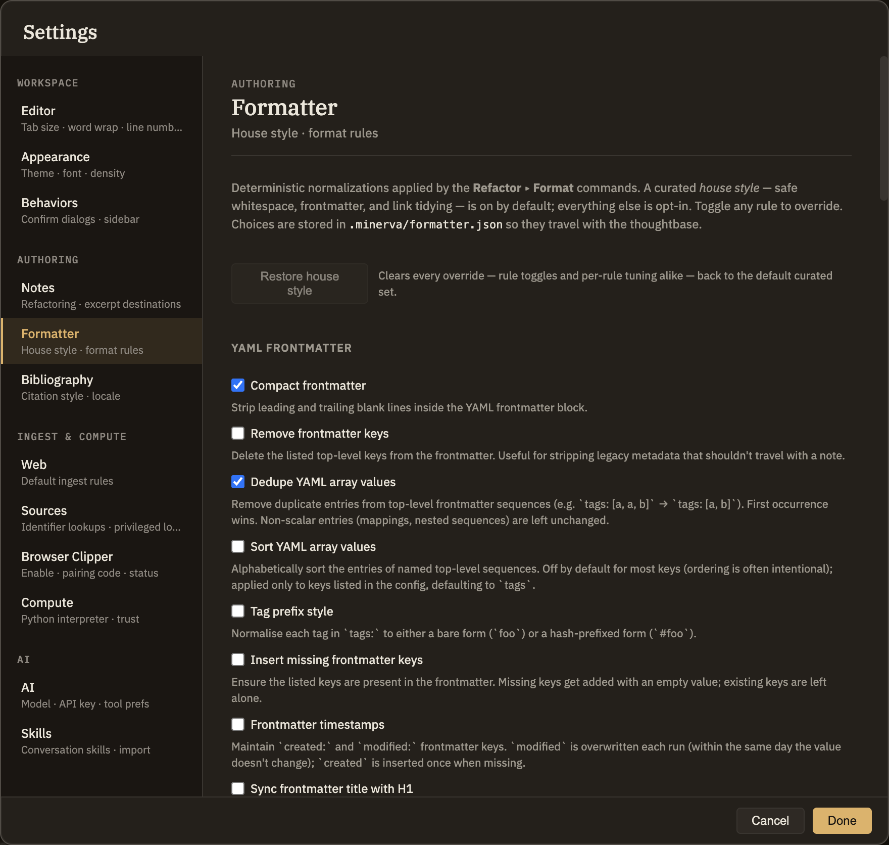

Formatter
The Formatter tidies your notes to a consistent style — cleaning up stray spaces, straightening list markers, tidying footnotes, and more. You choose which touch-ups you want here on the Formatter tab, then run them whenever you like from Refactor ▸ Format. Nothing changes your notes until you run it.
A safe default, plus opt-in polish
Each touch-up is a checkbox with a plain-language description. They come in two flavors. The house style is a set of gentle, uncontroversial clean-ups that are on by default — they tidy spacing, list markers, and links without ever changing your wording, your headings, or the meaning of what you wrote. Everything else is more opinionated — things like rewording heading capitalization or auto-correcting spelling — so it's off by default and stays off until you turn it on.
Your choices are remembered for the notebook you're working in, so they stay with it wherever you open it.
The Restore house style button puts every setting back to its starting point in one click — the safe clean-ups on, everything else off. If you'd adjusted how a particular rule behaves, that returns to its default too. It's greyed out when you're already at the house style, and it won't ask you to confirm, because your notes aren't touched until you next run Format.
What it can tidy
The touch-ups are grouped by what they affect. A few examples from each group:
[[wiki links]], and if two headings in a note share the same name, gives them distinct anchors so links can point to the right one — updating any links that referred to them.
Leaving one note alone
These touch-ups apply to whatever you run Format over. When one note should be left exactly as you wrote it — a verbatim quote, something you hand-format, or a rough scratch pad — you can mark it to be skipped. Add a property named format set to false, and Format will pass that note by while tidying the rest.
You can set this a few ways: type format: false into the note's properties block, use Add Property… from the editor or the file list, or add it in the Properties panel in the right sidebar. In each case, set the value type to a true/false toggle and switch it off.